R Projects: keep everything together
In this section, you will cover:
- Introduction
- Project organization best practices
- Version control
Introduction
Note: this section of the workshop borrows heavily from this software carpentries workshop.
Research projects tend to morph from neat ideas to messy notes, code, figures, manuscripts, etc… They’re all organized in a fashion that made sense at first, then evolve into something like this:
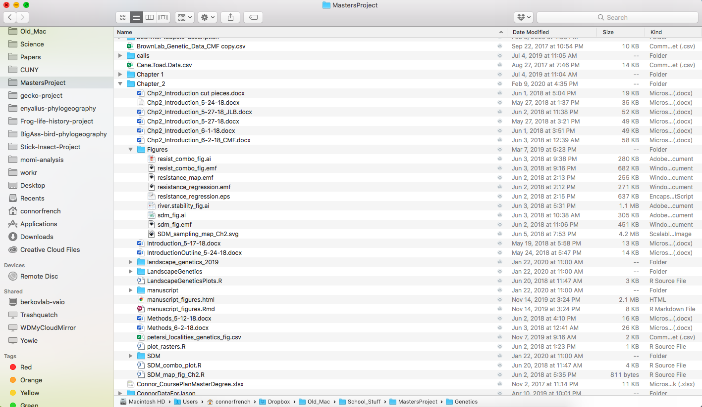
That is what my master’s project organization looks like and I’m not proud of it.
You may have noticed that I have filenames with the same root, followed by an identifier suffix. There are many reasons why you should ALWAYS avoid this:
- It is really hard to tell which version of your data is the original and which is the modified
- It gets really messy because it mixes files with various extensions together
- It probably takes you a lot of time to actually find things, and relate the correct figures to the exact code that has been used to generate it
A good project layout will ultimately make your life easer:
- It will help ensure the integrity of your data
- It makes it simpler to share your code with someone else (a lab-mate, collaborator, or supervisor)
- It allows you to easily upload your code with your manuscript submission
- It makes it easier to pick the project back up after a break
Fortunately, there are tools and packages which can help you manage your work effectively.
Creating an R Project
One of the most powerful and useful aspects of RStudio is its project management functionality. You’ll be using this today to create a self-contained, reproducible project.
Exercise 1
You’re going to create a new project in RStudio:
- Open a new RStudio window by finding your RStudio icon, hold
Ctrland click it, and “New RStudio Window” - Click the “File” menu button, then “New Project”
- Click “New Directory”
- Click “New Project”
- Type in the name of the directory to store your project, e.g. “r_workshop”
- If available, select the checkbox for “Create a git repository”
- Click the “Create Project” button
The simplest way to open an RStudio project once it has been created is to click through your file system to get to the directory where it was saved and double click on the .Rproj file. This will open RStudio and start your R session in the same directory as the .Rproj file. All your data, plots and scripts will now be relative to the project directory. RStudio projects have the added benefit of allowing you to open multiple projects at the same time each open to its own project directory. This allows you to keep multiple projects open without them interfering with each other.
Exercise 2
For this exercise, you’re going to open an RStudio project through the file system.
- Exit your RStudio window
- Navigate to the directory where you created a project in Exercise 1
- Double click on the
.Rprojfile in that directory
Project organization best practices
Although there is no “best” way to lay out a project, there are some general principles to adhere to that will make project management easier.
Treat data as read only
This is probably the most important goal of setting up a project. Data is typically time consuming and/or expensive to collect. Working with them interactively (e.g., in Excel) where they can be modified means you are never sure of where the data came from, or how it has been modified since collection. It is therefore a good idea to treat your data as “read-only”.
Data cleaning
In many cases your data will be “dirty”: it will need significant preprocessing to get into a format R (or any other programming language) will find useful. This task is sometimes called “data munging”. Creating a second “read-only” data folder to hold the “cleaned” data sets can prevent confusion between the two sets.
Treat generated output as disposable
Anything generated by your scripts should be treated as disposable: it should all be able to be regenerated from your scripts.
There are lots of different ways to manage this output. Having an output folder with different sub-directories for each separate analysis makes it easier later. Since many analyses are exploratory and don’t end up being used in the final project, and some of the analyses get shared between projects.
Good Enough Practices for Scientific Computing has some great recommendations for data management. The following is a slight modification of their file organization suggestion that works for me:
- Put each project in its own directory, which is named after the project
- Put text documents associated with the project in the
docdirectory- Put raw data and metadata in the
datadirectory, and files generated during cleanup and analysis in anoutputdirectory- Put source files for the project’s scripts and programs in the
srcdirectory. I’ll usually just name this folder theRfolder, since I like to stick to a single language when possible.- Put programs brought in from elsewhere or compiled locally in the
bindirectory- Put report files (e.g. R Markdown and its components) in a
reportsdirectory- Name all files to reflect their content or function
Exercise 3
Let’s create a directory layout for your project. Using your preferred directory creation method, create a directory layout that looks like this:
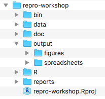
Version control
Version control is an important component of a reproducible research, but the subject is broad and deserves a series of workshops on its own. My favorite resource for integrating Git/GitHub with R/Rstudio is this excellent free online book. Although it seems a bit long, you can hop around and get things up and running pretty quickly.
In short, version control helps you collaborate and share your work by managing file changes in a structured manner. Jenny Bryan says it best- “think of it as the ‘Track Changes’ features from Microsoft Word on steroids”. Services like GitHub and Bitbucket allow you to share your version control repositories broadly.
R Markdown: share your work
In this section, you will cover:
- Introduction
- Markdown for formatted text
- Rendering
- Example data analysis
Introduction
Note: The content of this part of the workshop borrows heavily from Garrett Grolemund’s excellent introductory article.
R Markdown is a file format for making dynamic documents with R. An R Markdown document is written in markdown (an easy-to-write plain text format) and contains chunks of embedded R code, like the document below.
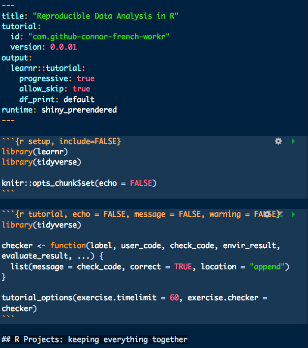
R Markdown files are designed to be used with the rmarkdown package. rmarkdown comes installed with the RStudio IDE.
R Markdown files are the source code for rich, reproducible documents. You can use R Markdown to create static reports, interactive documents, small web apps, and even websites! You can transform an R Markdown file in two ways.
knit - You can knit the file. The rmarkdown package will call the
knitrpackage.knitrwill run each chunk of R code in the document and append the results of the code to the document next to the code chunk. This workflow saves time and facilitates reproducible reports.Consider how authors typically include graphs (or tables, or numbers) in a report. The author makes the graph, saves it as a file, and then copy and pastes it into the final report. This process relies on manual labor. If the data changes, the author must repeat the entire process to update the graph.
In the R Markdown paradigm, each report contains the code it needs to make its own graphs, tables, numbers, etc. The author can automatically update the report by re-knitting.
convert - You can convert the file. The rmarkdown package will use the
pandocprogram to transform the file into a new format. For example, you can convert your .Rmd file into an HTML, PDF, or Microsoft Word file. You can even turn the file into an HTML5 or PDF slideshow.rmarkdownwill preserve the text, code results, and formatting contained in your original .Rmd file.Conversion lets you do your original work in markdown, which is very easy to use. You can include R code to knit, and you can share your document in a variety of formats.
In practice, authors almost always knit and convert their documents at the same time. I will use the term render to refer to the two step process of knitting and converting an R Markdown file.
You can manually render an R Markdown file with rmarkdown::render(). This is what a generic document looks like when rendered as a HTML file.
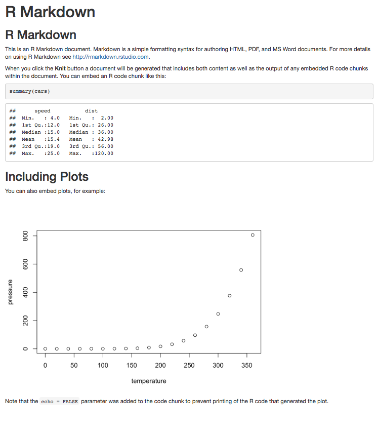
In practice, you do not need to call rmarkdown::render(). You can use a button in the RStudio IDE to render your report. R Markdown is heavily integrated into the RStudio IDE.
Getting started
Keep this cheatsheet available at all times. It saves me a lot of time searching!
To create an R Markdown report, open an R Markdown file from the File dropdown menu.
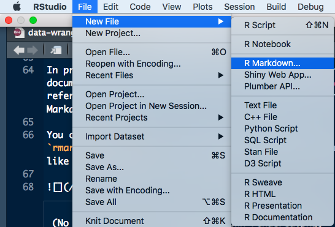
Then you need to give your report a title (don’t stress over it, you can change it later). You should also see other options for output. You can change these later as well. Since it’s the most flexible, we’ll stick with HTML.
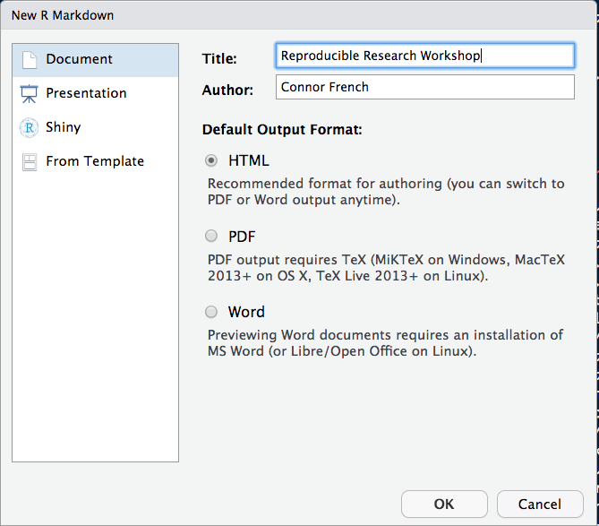
Now, you need to save the file and put it in the correct directory. I like to put report files in a special reports folder, but they would be equally okay in the top directory or R directory.
R Markdown reports rely on three frameworks
- markdown for formatted text
knitrfor embedded R code- YAML for render parameters
The sections below describe each framework. You will flesh out your own markdown document as we move through each section!
Markdown for formatted text
.Rmd files are meant to contain text written in markdown. Markdown is a set of conventions for formatting plain text. You can use markdown to indicate
- bold and italic text
- lists
- headers (e.g., section titles)
- hyperlinks
- and much more
Markdown’s coding conventions are easy to read, yet feature rich. That makes getting the basics under your fingers easy, while the flexibility is there when you need it. Here’s a file that uses some common (and useful) markdown conventions.
# Say Hello to markdown
Markdown is an **easy to use** format for writing reports. It resembles what you naturally write every time you compose an email. In fact, you may have already used markdown *without realizing it*. These websites all rely on markdown formatting
* [Github](www.github.com)
* [StackOverflow](www.stackoverflow.com)
* [Reddit](www.reddit.com)And here is what it looks like after it is rendered!
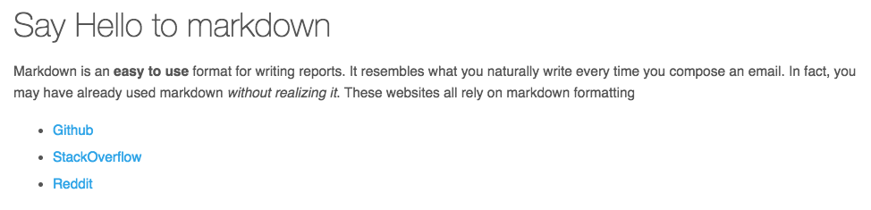
The file demonstrates how to use markdown to indicate:
headers - Place one or more hashtags at the start of a line that will be a header (or sub-header). For example, # Say Hello to markdown. A single hashtag creates a first level header. Two hashtags, ##, creates a second level header, and so on.
italicized and bold text - Surround italicized text with asterisks, like this
*heavy implication*. Surround bold text with two asterisks, like this**bold statement**.lists - Group lines into bullet points that begin with asterisks. Leave a blank line before the first bullet, like this
This is a list
* item 1
* item 2
* item 3- hyperlinks - Surround links with brackets, and then provide the link target in parentheses, like this
[Github](www.github.com).
I forget specific markdown conventions all the time. Wordpress has a nice reference sheet that I like to keep bookmarked. For a deeper dive, check this thorough reference out.
Two quick tips
- If you plan to render your .Rmd as HTML, markdown, or a few other formats you can use HTML code in your markdown body!
- To create a line break, insert two spaces after your text preceding the line break.
Exercise 1
You’re going to create an outline of your R Markdown report and add some descriptive text.
First, delete everything under your YAML header.
---
title: "Reproducible Data Analysis in R"
author: "Connor French"
date: "2/12/2020"
output: html_document
---Next, create four headers: Overview, Data processing, Data visualization, Session information.
Under the Overview header, add this descriptive text, including the formatting:
This document is a brief introduction to reproducible data analysis. The three data analysis components included in this document are:
- data processing,
- data visualization, and
- session information
Rendering
This is where R Markdown really shines. You can transform your markdown file into a variety of formats, the main being HTML, PDF, or Microsoft Word. See here for a more complete list of output options.
To convert your markdown file, click the “Knit” icon that appears above your file in the scripts editor. A drop down menu will let you select the type of output that you want.
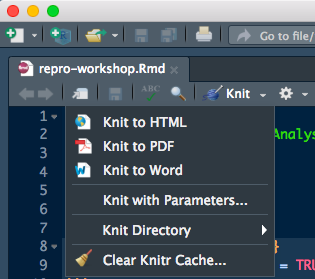
When you click the button, rmarkdown will duplicate your text in the new file format. rmarkdown will use the formatting instructions that you provided with markdown syntax.
Once the file is rendered, RStudio will show you a preview of the new output and save the output file in your working directory.
Go ahead and knit your document as HTML! It should look like this:
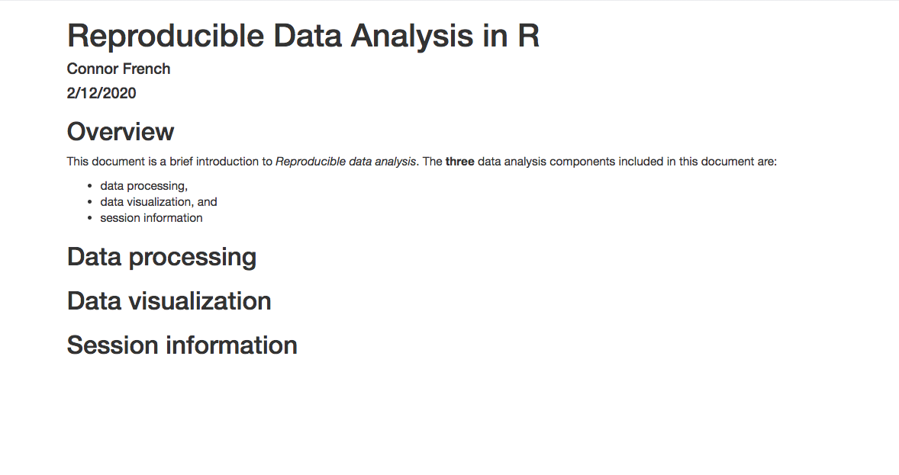
Note: RStudio does not build PDF and Word documents from scratch. You will need to have a distribution of Latex installed on your computer to make PDFs and Microsoft Word (or a similar program) installed to make Word files. Installing Latex can be a headache, so in the interest of time we aren’t outputting to PDF or Word for this workshop.
Quick tip
A shortcut to knit your document is Cmd/Ctrl + Shift + K. It will knit your document according to the specification you make in the YAML heading. We’ll get to YAML in a few.
knitr for embedded R code
The knitr package extends the basic markdown syntax to include chunks of executable R code.
When you render the report, knitr will run the code and add the results to the output file. You can have the output display just the code, just the results, or both (or none if you want to do secret things under the hood).
To embed a chunk of R code into your report, surround the code with two lines that each contain three backticks. After the first set of backticks, include {r}, which alerts knitr that you have included a chunk of R code. It looks like this:
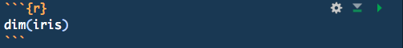
When you render your document, knitr will run the code and append the results to the code chunk. knitr will provide formatting and syntax highlighting to both the code and its results (where appropriate).
As a result, the markdown snippet above will look like this when rendered (to HTML).
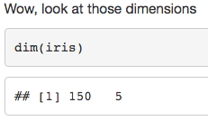
To omit the results from your final report (and not run the code) add the argument eval = FALSE inside the brackets and after r. This will place a copy of your code into the report.
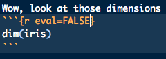
If you still want to run the code, but want to hide the results, you can supply the argument results='hide'
 |
To omit the code from the final report (while including the results) add the argument echo = FALSE. This will place a copy of the results into your report. |
| 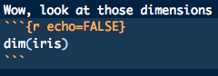 |
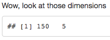
echo = FALSE is very handy for adding plots to a report if the aim is to tell a story, rather than convey every detail of the analysis.
echo and eval are not the only arguments that you can use to customize code chunks. You can learn more about formatting the output of code chunks at the rmarkdown and knitr websites.
Exercise 2
Let’s do some analysis! You’re going to take a look at the starwars data set that comes with the dplyr package. You’re going to do a few things:
- Load in the necessary packages and load the data
- Write the raw data to your
datafolder - Do a little bit of data wrangling
- Visualize some results
- Output session information
1) Load in packages and data

For your first chunk, under the Data processing header, load in the tidyverse package using the library() function. Then, in the same chunk, assign the starwars data set to an object, like this: starwars_df <- dplyr::starwars. You’ll have to remove a few columns that don’t obey .csv file specifications. Finally, take a glance at the data set by printing it. You just need to type starwars_df at the bottom of the chunk for it to print.
Your chunk should look like this:
library(tidyverse)
# remove list-columns. They don't write out well
starwars_df <- dplyr::starwars %>%
select(-c(films, vehicles, starships))
starwars_dfLoading packages often spits out a bunch of messages that will clutter up the report. It’s a good idea to check those messages when you’re writing the code, but it’s generally safe to leave them out of a final report. To prevent package loading messages from being printed to your report, add message = FALSE to your chunk header, after r.
Now, add a short description above your code chunk to explain what you did. Run the chunk to see what you should expect when the document is rendered.
2) Write out raw data
Usually you will already have a data set sitting in your data folder ready to be analyzed. In your case, you pulled it from a package and you need a local copy for posterity. To do this, first insert a new R chunk under your last chunk. Then, you need to set the path that you want to write the file to. To do this in a reproducible fashion, you’re going to use the here package. here makes sure that your working directory is always your project’s top directory. This will allow your code to run for any user, regardless of where they download it. For a longer discussion of the merits of here over something like setwd(), see this blog post by Jenny Bryan. If you don’t have here installed, run install.packages("here") in your R console.
Add library(here) to your code chunk to load the package. Then, use this bit of code to assign the path and file name of your data frame to an object.
# create the full path
df_path <- here("data", "starwars_raw.csv")Then, put write_csv(starwars_df, df_path) to write this data frame to your data folder. Run the whole chunk, then check your data folder to see if it worked! Make sure to include a short description above the R chunk, describing what you did.
3) Data wrangling
Now it’s time to prep your data to answer a question. This data set has a few different variables to work with, but for simplicity’s sake, let’s answer this question:
How do species weights vary in the Star Wars universe?
You have a mass column and a species column in the data set, so you’re equipped to answer this question! First, you’ll have to do a bit of data wrangling to get the insights you want. You’re going to do some filtering and summarizing to obtain a data frame of the summary statistics you’re actually interested in. Copy-paste this bit of code in a new chunk under the Data processing header. The new data frame should look like what’s printed below. Make sure to add a description of what is going on above the chunk!
# create a new data frame that contains mass summary statistics
starwars_sum <- starwars_df %>%
filter(!is.na(species),!is.na(mass)) %>% # remove missing values
group_by(species) %>%
filter(n() > 1) %>% # filter out species that don't have more than one record
summarise(
avg_mass = mean(mass), # create a new column with the average mass for each species
max_mass = max(mass), # " " maximum mass
min_mass = min(mass),
sd_mass = sd(mass),
n_ind = n()
) %>%
ungroup()
# print the new data frame
starwars_sum## # A tibble: 5 x 6
## species avg_mass max_mass min_mass sd_mass n_ind
## <chr> <dbl> <dbl> <dbl> <dbl> <int>
## 1 Droid 69.8 140 32 51.0 4
## 2 Gungan 74 82 66 11.3 2
## 3 Human 82.8 136 45 19.4 22
## 4 Mirialan 53.1 56.2 50 4.38 2
## 5 Wookiee 124 136 112 17.0 2If the above code looks foreign to you, don’t worry! The workr package contains a data wrangling tutorial that can bring you up to speed. Once you have the package loaded, all you need to do is execute the run_data_wrangling() function to work through the interactive tutorial. Don’t do that now, though!
Let’s write this new data frame to a file. Since this isn’t raw data, you’re not writing it to the data folder. Instead, write it to the output/spreadsheets folder. Let’s name this file summary_stats.csv. Paste the below code into a new chunk under your Data processing header.
sum_path <- here("output", "spreadsheets", "summary_stats.csv")
write_csv(starwars_sum, sum_path)Great! Now for the fun part- data visualization.
4) Visualize results
You’re going to create visualization for each mass summary stat. Since you’re interested in comparing summary stats (single values) across species (categorical), an ordered bar chart is the most appropriate visualization for this data (lollipop charts are great too). I highly recommend from Data to Viz when you are unsure about the appropriate way to represent your data.
For each block of code below, create a new chunk and insert the code there. Include descriptions for each chunk and what your findings are. Feel free to modify the code to make your plots prettier if you have time! I’m keeping them simple. If you’d like to learn how to start making your own beautiful data visualizations, keep tabs on the GCDI workshop calendar for the next data visualization workshop. The workr package will have one soon!
Number of individuals plot.
n_ind_plot <-
starwars_sum %>%
mutate(species = fct_reorder(species, n_ind)) %>% # order species by numeric variable
ggplot(aes(x = species, y = n_ind)) +
geom_col() +
coord_flip() +
theme_minimal()
# print the plot
n_ind_plot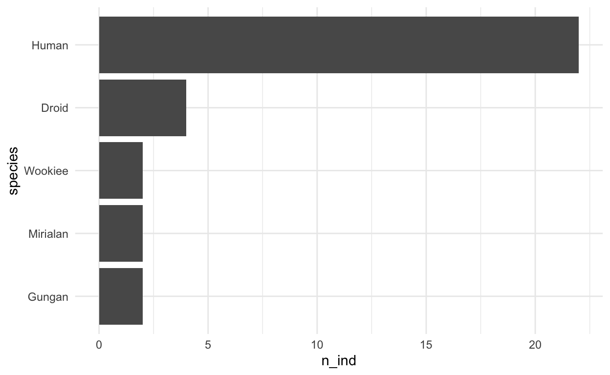
Average mass plot. Since the structure of the code is similar for all of the plots, it’s probably safe to just print the plot without the code to your report. Try adding echo=FALSE to your chunk header for the remaining plots to keep the code from being printed to your report.
avg_mass_plot <-
starwars_sum %>%
mutate(species = fct_reorder(species, avg_mass)) %>% # order species by numeric variable
ggplot(aes(x = species, y = avg_mass)) +
geom_col() +
coord_flip() +
theme_minimal()
# print the plot
avg_mass_plot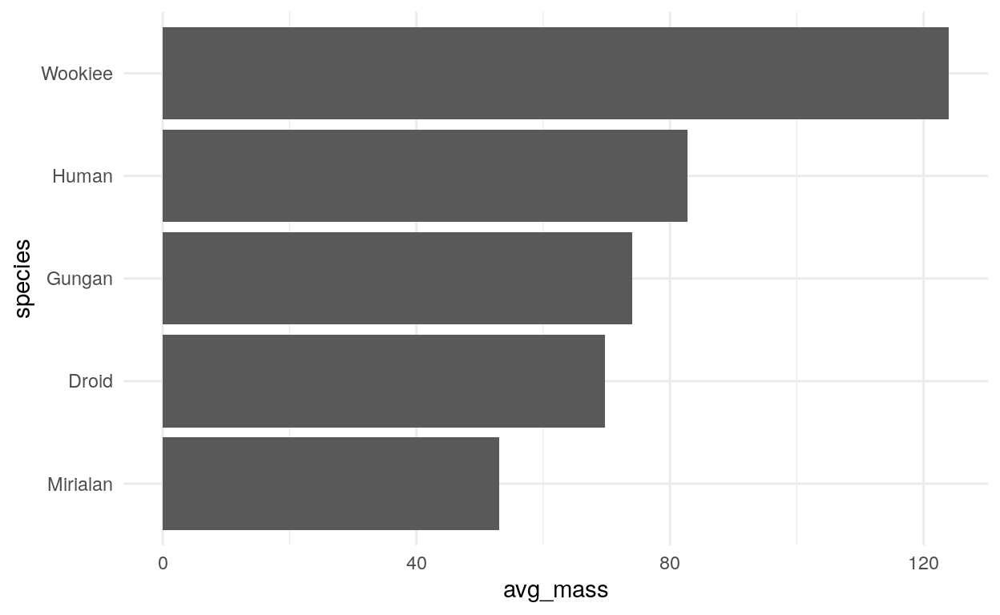
Maximum mass plot.
max_mass_plot <-
starwars_sum %>%
mutate(species = fct_reorder(species, max_mass)) %>% # order species by numeric variable
ggplot(aes(x = species, y = max_mass)) +
geom_col() +
coord_flip() +
theme_minimal()
# print the plot
max_mass_plot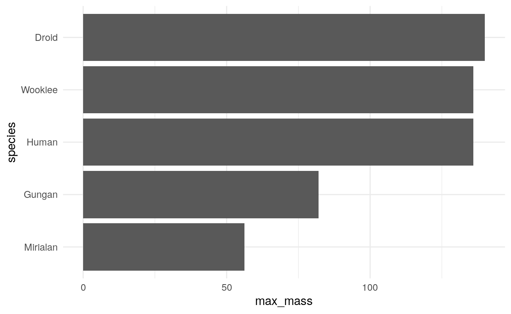
Minimum mass plot.
min_mass_plot <-
starwars_sum %>%
mutate(species = fct_reorder(species, min_mass)) %>% # order species by numeric variable
ggplot(aes(x = species, y = min_mass)) +
geom_col() +
coord_flip() +
theme_minimal()
# print the plot
min_mass_plot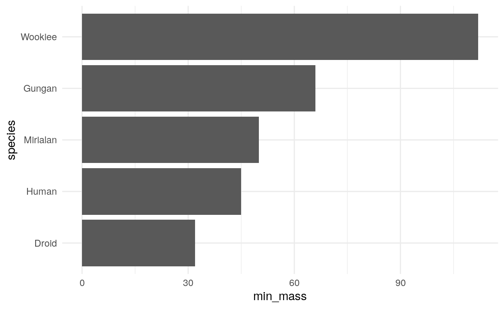
Standard deviation in mass plot.
sd_mass_plot <-
starwars_sum %>%
mutate(species = fct_reorder(species, sd_mass)) %>% # order species by numeric variable
ggplot(aes(x = species, y = sd_mass)) +
geom_col() +
coord_flip() +
theme_minimal()
# print the plot
sd_mass_plot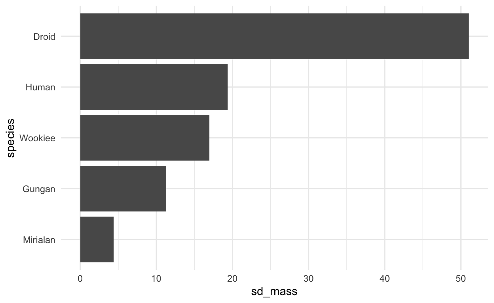
There are ways to create a single graphic for all five plots, but I’ll leave that up to you.
Now time to write the plots to your output directory! Make this the last chunk of your Data visualization section. I would recommend adding message=FALSE to your chunk header because ggsave() likes to output the image size as a message, which makes things a bit messy.
plot_dir <- here("output", "figures")
# to save space, I'm not assigning the file names to intermediate variables
# num_inds plot
ggsave(paste(plot_dir, "num_inds.png", sep = "/"),
num_ind_plot,
device = "png")
# avg_mass plot
ggsave(paste(plot_dir, "avg_mass.png", sep = "/"),
avg_mass_plot,
device = "png")
# max_mass plot
ggsave(paste(plot_dir, "max_mass.png", sep = "/"),
max_mass_plot,
device = "png")
# min_mass plot
ggsave(paste(plot_dir, "min_mass.png", sep = "/"),
min_mass_plot,
device = "png")
# sd_mass plot
ggsave(paste(plot_dir, "sd_mass.png", sep = "/"),
sd_mass_plot,
device = "png")Add a short summary of your results at the end, then you’re all finished with analyses! But you still have one more task to complete.
5) Output session information
This is a very important part of reproducibility! R packages get updated all of the time, and may do different things on different systems. Therefore, it is important to report information about your system so future users can make sure any discrepencies between theirs and your results aren’t due to versioning or system differences. I usually wait until the final publication version of the analysis to write this to a file, and store it in the doc directory. I’ll print it to the end of the report for the intervening versions of the analysis. Add this chunk under the Session information header.
si <- sessionInfo()
siHere is the code for writing the session info to the doc folder.
si_path <- here("doc", "session_info.txt")
# write session info to the doc folder
writeLines(capture.output(sessionInfo()), si_path)YAML for render parameters
You can use a YAML header to control how rmarkdown renders your .Rmd file. A YAML header is a section of key: value pairs surrounded by --- marks, like below
---
title: "Reproducible Data Analysis in R"
author: "Connor French"
date: "2/12/2020"
output: html_document
---The output: value determines what type of output to convert the file into when you call rmarkdown::render(). Note: you do not need to specify output: if you render your file with the RStudio IDE knit button.
The following are some common values output: recognizes:
html_document, which will create HTML output (default)pdf_document, which will create PDF outputword_document, which will create Word output
There are a variety, most of which you can find here.
If you use the RStudio IDE knit button to render your file, the selection you make in the gui will override the output: setting.
There are many YAML options to change your rmarkdown document’s appearance. You’ll play with a couple in the next exercise.
Exercise 3
First, render your document using Cmd/Ctrl + Shift + K. It probably looks pretty good! But, there are some modifications that could be made to improve it. Try inserting highlight: tango into your YAML header like this:
---
title: "Reproducible Data Analysis in R"
author: "Connor French"
date: "2/12/2020"
output:
html_document:
highlight: tango
---and rendering it again. Your code highlighting should look a bit different. There are a few options, but tango is my favorite. If you want, try out a few of the other highlight options and see which one you like!
One more appearance feature that you can play with to alter your document’s appearance is the theme. This will overhall your document’s appearance, with options from the Bootswatch theme library.
After you’ve had some time to play around with themes, let’s see what your document should look like. Follow this link to see what I came up with and compare what you have.
Recap
You are now well on your way to making your own research reproducible! Lets see what you’ve learned:
- R Projects
- Appropriate file management techniques
- R Markdown
- Maybe even some data wrangling and data viz skills!